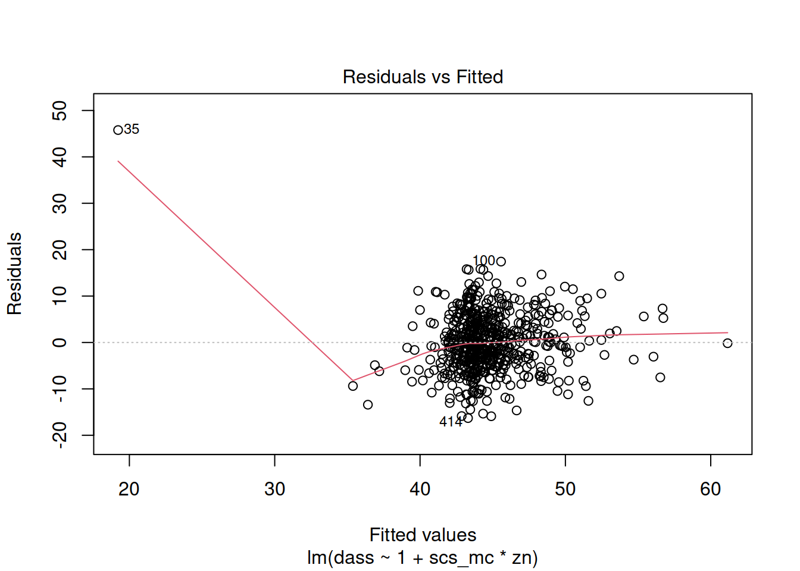
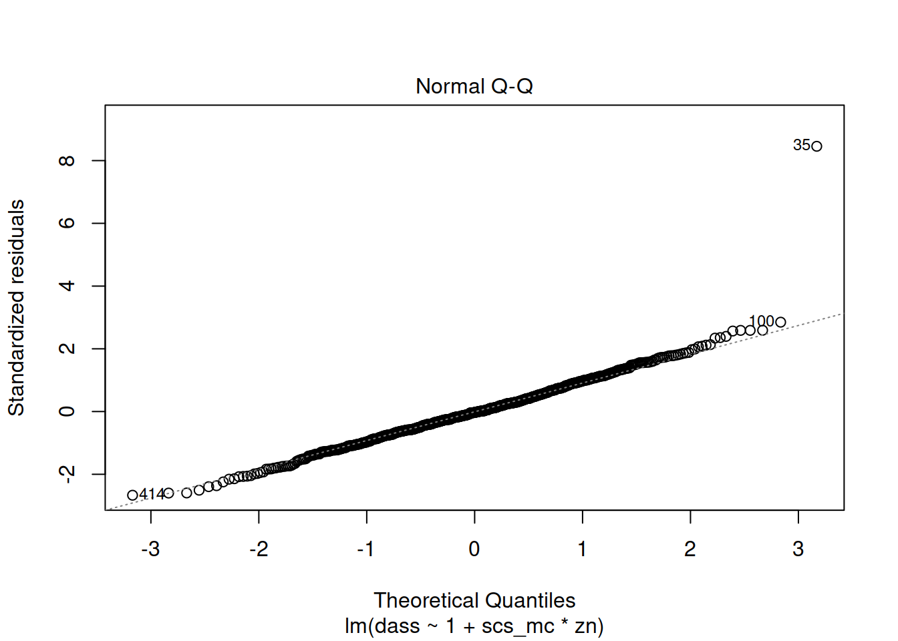
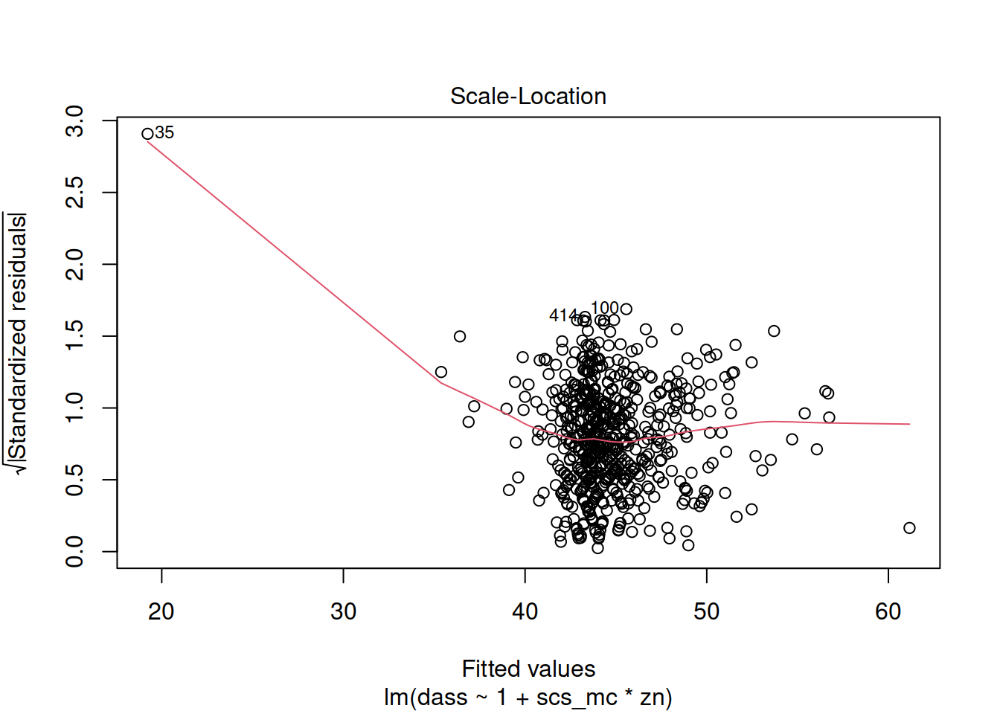
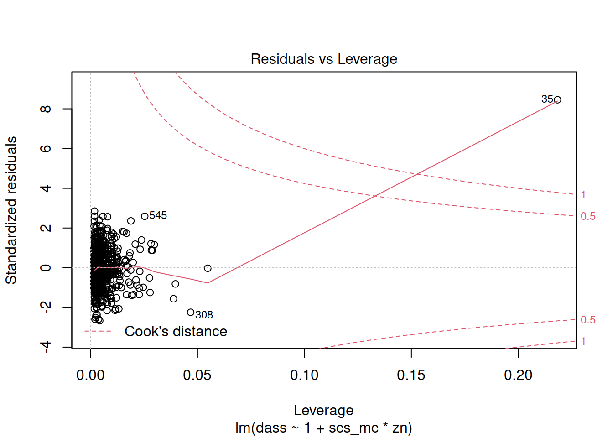
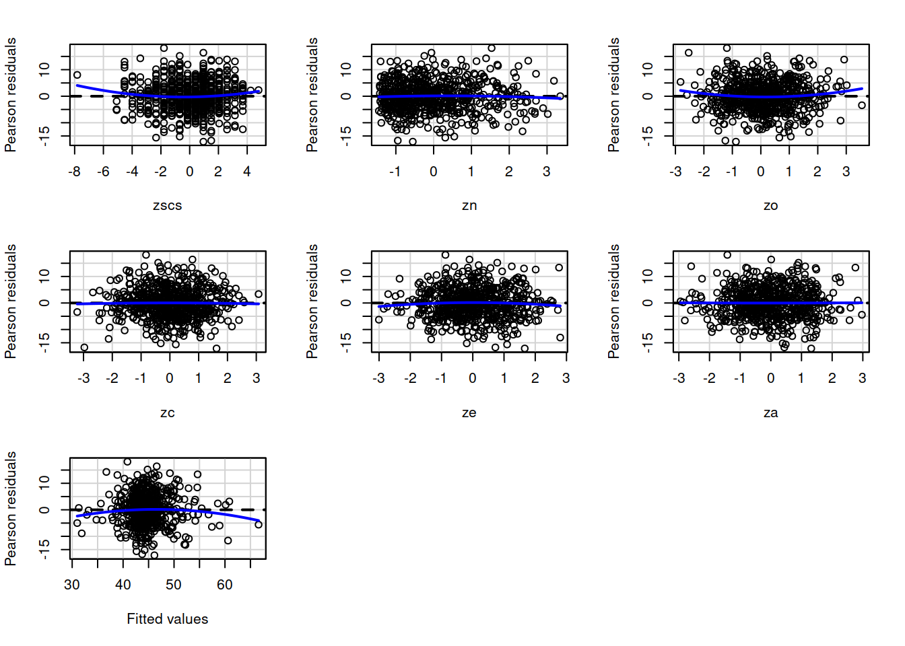

LEARNING OBJECTIVES
Pre-Lab activity
Please read Przybylski and Weinstein (2017).
You can find it at https://journals.sagepub.com/doi/full/10.1177/0956797616678438
Research question
Previous research has identified an association between an individual’s perception of their social rank and symptoms of depression, anxiety and stress. We are interested in the individual differences in this relationship.
Specifically:
- Controlling for other personality traits, does neuroticism moderate effects of social comparison on symptoms of depression, anxiety and stress?
library(tidyverse)
scs_study <- read_csv("https://uoepsy.github.io/data/scs_study.csv")
# scale scs score
scs_study <-
scs_study %>%
mutate(
zscs = scale(scs)
)
dass_mdl <- lm(dass ~ 1 + zscs*zn + zo + zc + ze + za, data = scs_study)plot(dass_mdl2)



dass_mdl2 <- lm(dass ~ 1 + zscs*zn + zo + zc + ze + za, data = scs_study[-35, ])
library(car)
residualPlots(dass_mdl2)
## Test stat Pr(>|Test stat|)
## zscs
## zn -0.5911 0.55467
## zo 1.7801 0.07553 .
## zc -0.2403 0.81018
## ze -0.9951 0.32004
## za 0.0725 0.94219
## Tukey test -1.6406 0.10089
## ---
## Signif. codes: 0 '***' 0.001 '**' 0.01 '*' 0.05 '.' 0.1 ' ' 1ncvTest(dass_mdl2)## Non-constant Variance Score Test
## Variance formula: ~ fitted.values
## Chisquare = 1.508659, Df = 1, p = 0.21934shapiro.test(residuals(dass_mdl2))##
## Shapiro-Wilk normality test
##
## data: residuals(dass_mdl2)
## W = 0.99826, p-value = 0.7616dwt(dass_mdl2)## lag Autocorrelation D-W Statistic p-value
## 1 -0.03991314 2.078413 0.322
## Alternative hypothesis: rho != 0vif(dass_mdl2)## zscs zn zo zc ze za zscs:zn
## 1.015133 1.015736 1.013310 1.008235 2.332486 2.342220 1.012475tab_model() from the sjPlot package).Przybylski, Andrew K, and Netta Weinstein. 2017. “A Large-Scale Test of the Goldilocks Hypothesis: Quantifying the Relations Between Digital-Screen Use and the Mental Well-Being of Adolescents.” Psychological Science 28 (2). Sage Publications Sage CA: Los Angeles, CA: 204–15.